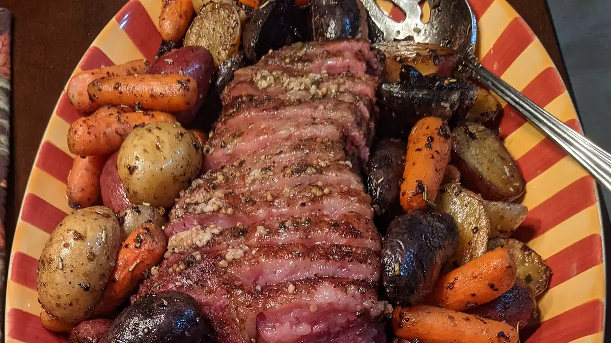
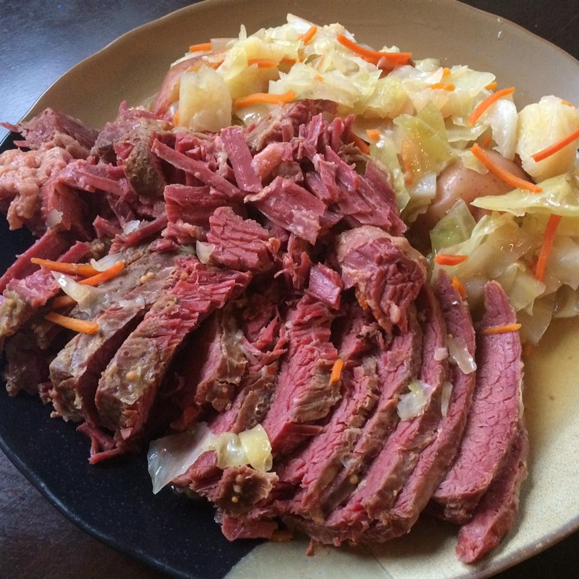

Braised Corned Beef Brisket
Description
this is a slow braise that is tender, flavorful, and has a caramelized surface when it's done. serve it with colcannon, steamed cabbage wedges, braised carrots, and parsnips.
Ingredients
- 1 (5 pound) flat-cut corned beef brisket
- 1 tablespoon browning sauce (such as Kitchen Bouquet®), or as desired
- 1 tablespoon vegetable oil
- 1 onion, sliced
- 6 cloves garlic, sliced
- 2 tablespoons water
Steps:
- Preheat oven to 275 degrees F (135 degrees C).
- Discard any flavoring packet from corned beef. Brush brisket with browning sauce on both sides. Heat vegetable oil in a large skillet over medium-high heat and brown brisket on both sides in the hot oil, 5 to 8 minutes per side.
- Place brisket on a rack set in a roasting pan. Scatter onion and garlic slices over brisket and add water to roasting pan. Cover pan tightly with aluminum foil.
- Roast in the preheated oven until meat is tender, about 6 hours.
Corned Beef and Cabbage

Description
What's more Irish than a traditional recipe for corned beef and cabbage? Serve with mustard or horseradish if desired.
Ingredients
- 1 (3 pound) corned beef brisket with spice packet
- 10 small red potatoes
- 5 medium carrots
- 1 large head cabbage
Directions:
- Place corned beef in a Dutch oven and cover with water. Add spice packet, cover, and bring to a boil. Reduce heat and simmer until corned beef is just about fork-tender, about 2 hours.
- While the corned beef is simmering, cut potatoes in half. Peel carrots and cut into 3-inch pieces. Cut cabbage into small wedges.
- When corned beef has cooked for 2 hours, add potatoes and carrots; cook until vegetables are almost tender and meat is fork-tender, about 10 minutes. Add cabbage and cook until tender, about 15 more minutes.
- Remove meat and let rest for 15 minutes. Leave broth and vegetables in the Dutch oven.
- Slice meat across the grain. Serve with vegetables and broth.
Slow-Cooker Corned Beef and Cabbage
Description:
No more dry corned beef! Cook this in your slow cooker all day and you're guaranteed success! Serve this with soda bread for a warm and satisfying meal.
Ingredients:
- 4 large carrots, peeled and cut into matchstick pieces
- 10 baby red potatoes, quartered
- 1 onion, peeled and cut into bite-sized pieces
- 4 cups water
- 1 (4 pound) corned beef brisket with spice packet
- 6 ounces beer
- ½ head cabbage, coarsely chopped
Directions:
- Place the carrots, potatoes, and onion into the bottom of a slow cooker, pour in the water, and place the brisket on top of the vegetables. Pour the beer over the brisket. Sprinkle on the spices from the packet, cover, and set the cooker on High.
- Cook the brisket for about 8 hours. An hour before serving, stir in the cabbage and cook for 1 more hour.